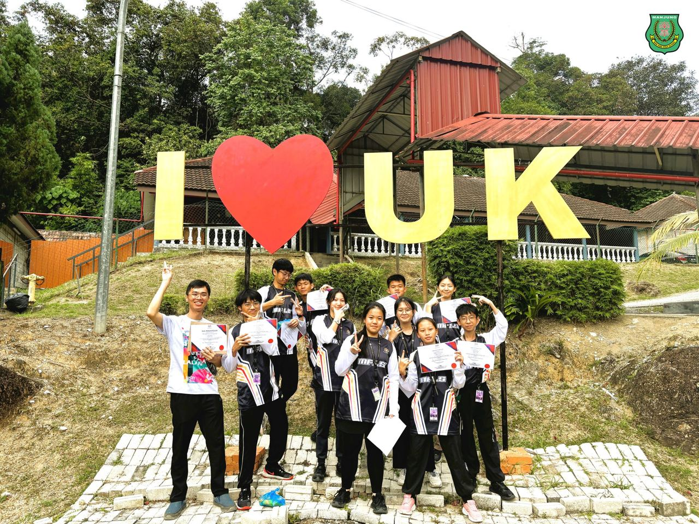
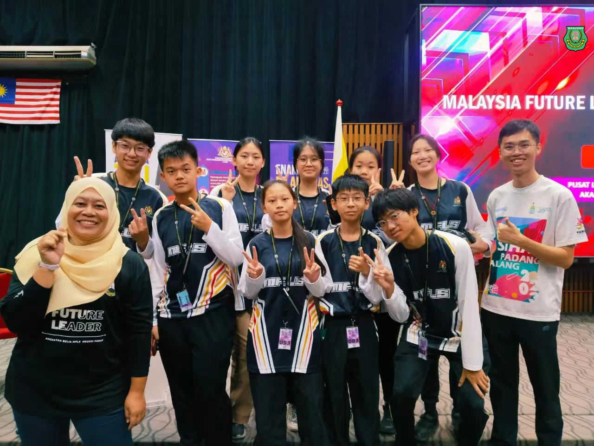
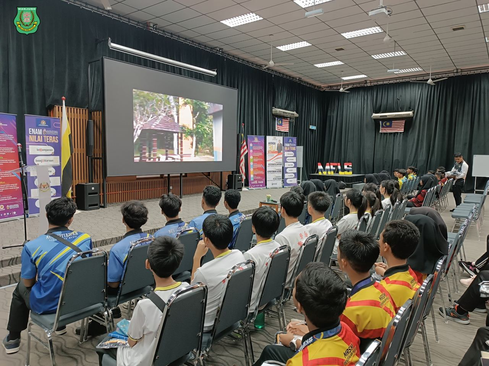
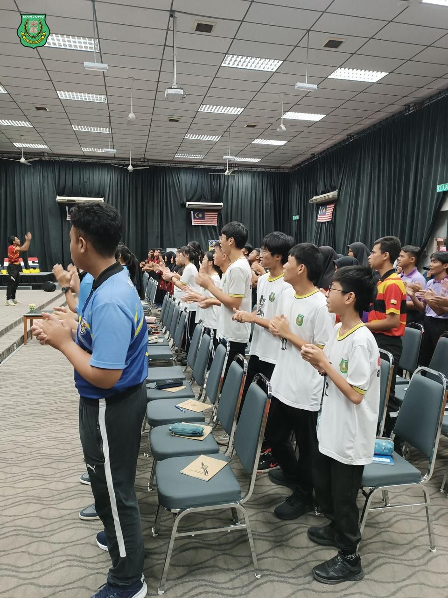
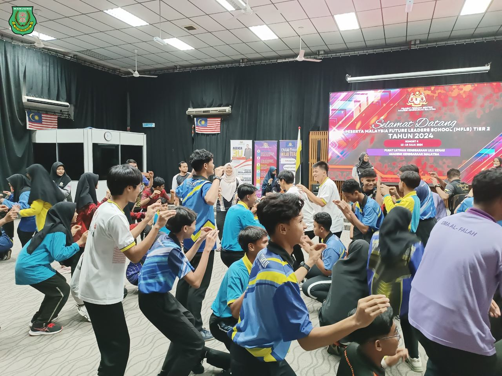
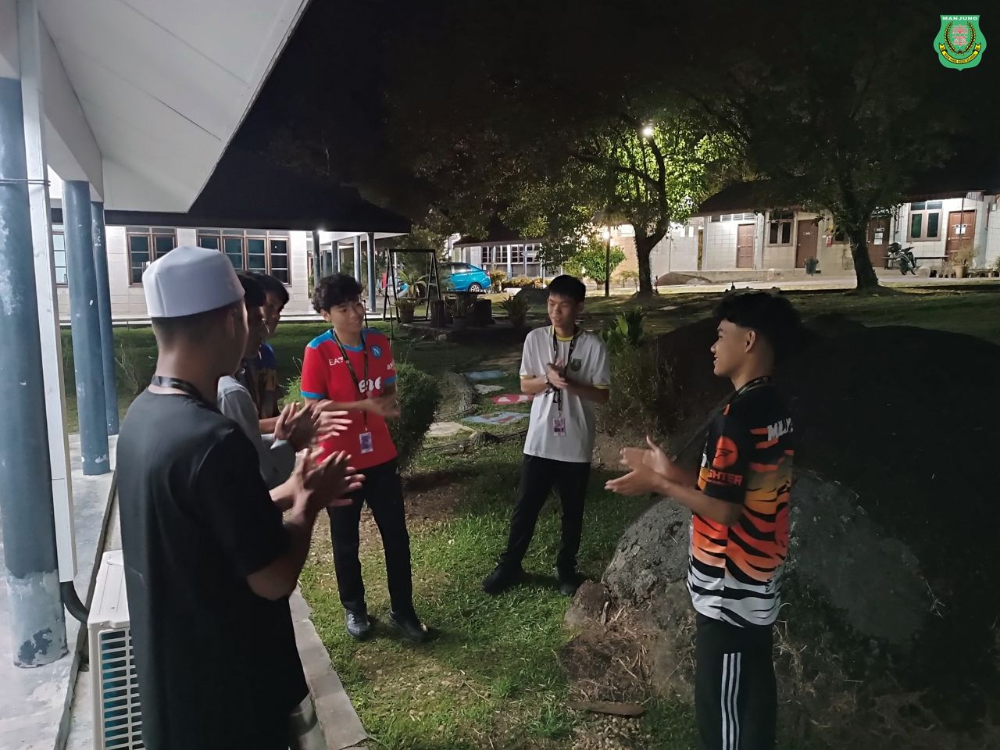
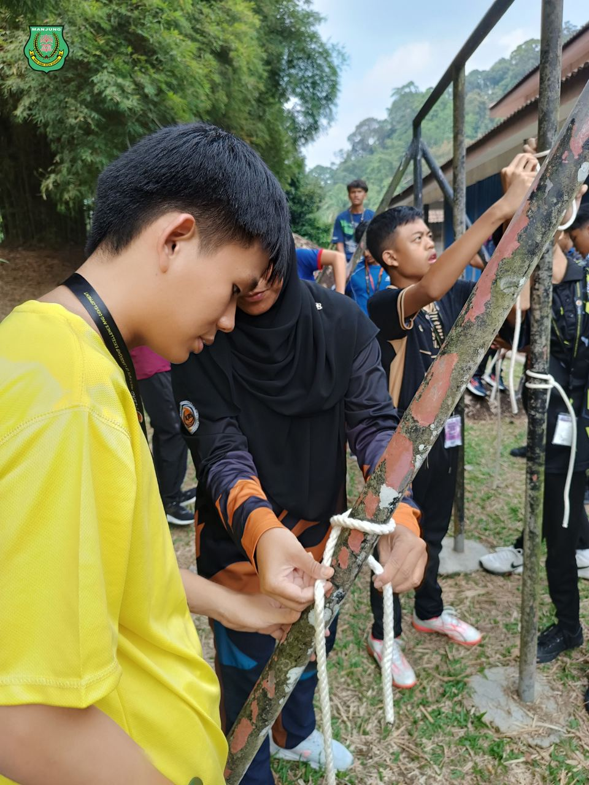
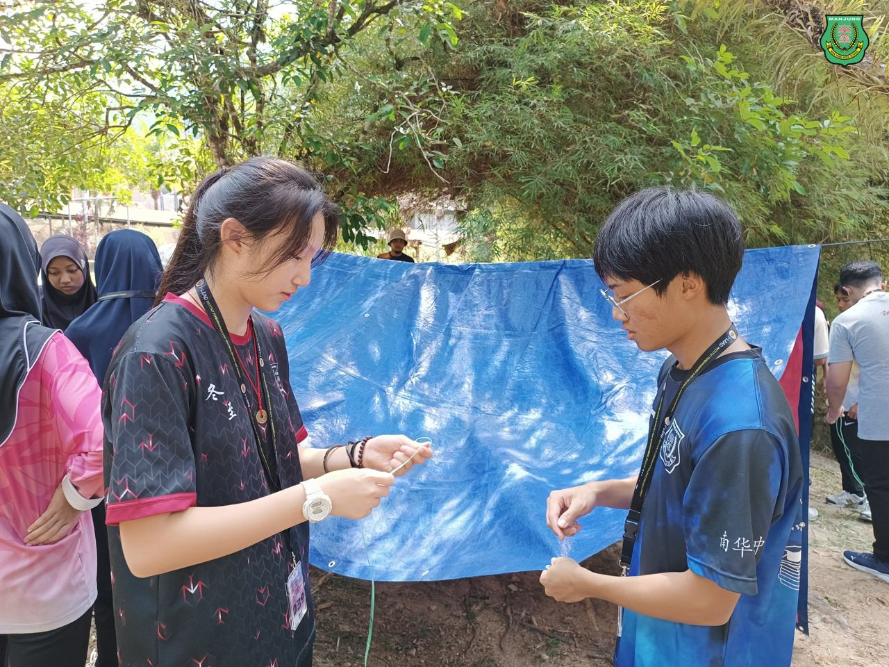

响应国家未来领袖学府计划号召
响应国家未来领袖学府计划号召
南华独中学生参与培训收获颇丰
南华独中10名学生日前参加了由马来西亚首相署学术部门主办的"马来西亚未来领袖学府"(MFLS)2024年训练营，在为期5天的活动中获得了宝贵的领导力培训和跨文化交流经验。
该训练营于7月15日至19日在霹雳州江沙Ulu Kenas营区举行，吸引了来自全国各地15至17岁的在籍学生参与。南华独中作为霹雳州仅有的3所受邀私立学校之一，派出了10名优秀学生参加此次活动。训练营的课程设置丰富多样，涵盖了领导力、批判性思维、户外生存技能和社区服务等多个方面。学生们不仅学习了使用指南针、搭建帐篷和野外烹饪等实用技能，还参与了高空绳索等挑战性活动，锻炼了他们的勇气和团队合作精神。
南华独中辅导主任叶佳盛老师暨本次领队表示，这次活动为学生们提供了一个难得的机会，让他们能够走出自己的文化圈子，与其他族裔的同学进行深入交流。叶老师表示，学生们在活动中的表现令人欣喜，虽然一开始因文化和语言差异显得有些拘束，但很快就适应了环境，开始积极与其他学员交流。此外，野营活动对于大多数南华独中的学生来说是首次体验。面对挑战，学生们表现出了积极的态度，成功克服了困难。
南华独中校长陈丽冰博士对此次活动给予了高度评价，不仅提供了培养学生领导才能的平台，还增进了国民团结，符合政府倡导的"马来西亚前进"(Malaysia Madani)精神。陈校长表示，近年来南华独中提出“各美其美，美人之美，美美与共，天下大同”的愿景，希望能够促跨族群、跨文化、跨社区的资源共享与交流，本次参加马来西亚未来领袖学府训练营的10位学生将会成为推动交流的生力军。“南华独中将继续支持学生参与类似的国家级培训项目，为培养下一代领袖贡献力量”陈校长如此表示。
作为"马来西亚未来领袖学府"计划的一部分，此次训练营是政府投资7000万令吉、惠及全国35,000名青少年的大型人才培养项目之一。南华独中学生的成功参与，不仅展现了华文独立中学学生的优秀素质，也体现了马来西亚多元文化社会的和谐发展。
#马来西亚首相署学术部 #马来西亚未来领袖学府 #MFLS
#美美与共 #天下大同 #南华独中 #曼绒 #实兆远







